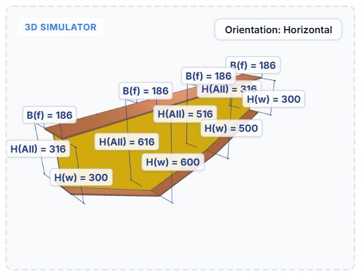
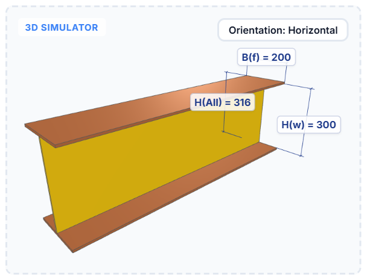
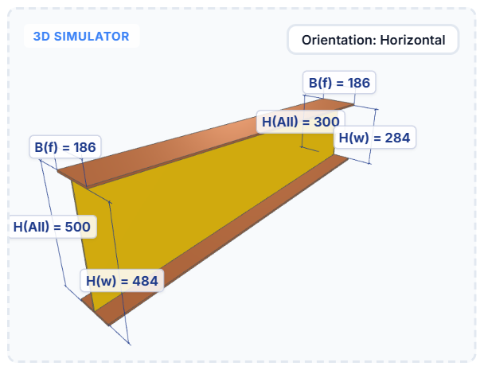
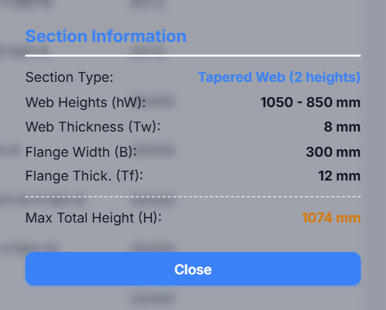

Cú pháp khai báo tiết diện trong PEB Member
Cả cấu kiện PEB — cao bao nhiêu, vát mấy đoạn, cánh rộng dày bao nhiêu — được mô tả bằng một dòng chữ duy nhất trong cột Profile, ví dụ W(300-500)*6+F186*8. Bài này đi hết mọi cách viết được chấp nhận, kèm hình 3D của từng ví dụ, bảng tra nhanh và cách xử lý khi gõ sai.

W(300-500-600-300)*6+F186*8 và hình 3D mà PEB Member dựng ra từ nó.1. Chuỗi tiết diện dùng ở đâu
Giá trị trong cột Profile của bảng PEB Member được dùng cho bốn việc:
- Dựng hình mô phỏng 3D và các đường kích thước bên phải giao diện.
- Ghi kích thước thật vào model khi bấm Draw hoặc Update.
- Làm tên cấu kiện (khi Name By = Section) hoặc tên bản thép (khi Part Name By = Full Assembly Profile) — xem bài hướng dẫn cài đặt.
- Làm tên file khi Export Attributes (dấu
*được đổi thànhxcho hợp lệ với tên file Windows).
2. Kiểu W — khai theo chiều cao bụng
Đây là cách viết thường dùng nhất, vì bản vẽ gia công thường ghi theo chiều cao bản bụng:
W<chiều cao bụng>*<dày bụng>+F<rộng cánh>*<dày cánh>
| Thành phần | Ý nghĩa | Ví dụ W300*6+F200*8 |
|---|---|---|
W… | Chiều cao bản bụng hW (mm) | 300 |
*… | Chiều dày bản bụng Tw | 6 |
F… | Bề rộng bản cánh B | 200 |
*… (sau F) | Chiều dày bản cánh Tf | 8 |
Tổng chiều cao tiết diện khi đó là hW + 2 × Tf = 300 + 16 = 316 mm. Bản cánh trên và bản cánh dưới luôn dùng chung bề rộng và chiều dày.

W300*6+F200*8 — tiết diện không đổi suốt chiều dài.3. Kiểu H — khai theo tổng chiều cao
Khi bản vẽ ghi tổng chiều cao tiết diện (đã gồm hai bản cánh), dùng kiểu H:
H<tổng chiều cao>*<rộng cánh>*<dày bụng>*<dày cánh>
Phần mềm tự quy đổi về chiều cao bụng: hW = H − 2 × Tf. Ví dụ H300*186*6*8 cho bụng cao 300 − 16 = 284 mm.
⚠️ Thứ tự tham số của kiểu H khác kiểu W — rất dễ nhầm:
| Kiểu | Số thứ 1 | Số thứ 2 | Số thứ 3 | Số thứ 4 |
|---|---|---|---|---|
W | Cao bụng | Dày bụng | Rộng cánh (sau F) | Dày cánh |
H | Tổng chiều cao | Rộng cánh | Dày bụng | Dày cánh |

H(300-500)*186*6*8 — tổng chiều cao đổi từ 300 lên 500, bụng tương ứng 284 → 484.4. Tiết diện vát nhiều đoạn
Muốn tiết diện thay đổi dọc theo cấu kiện, liệt kê các chiều cao cách nhau bằng dấu -. Dấu ngoặc đơn giúp dễ đọc nhưng không bắt buộc: W(300-500)*6+F186*8 và W300-500*6+F186*8 cho kết quả như nhau.
W(300-500)*6+F186*8 — bụng vát từ 300 lên 500; bản cánh trên phẳng, bản cánh dưới bám theo độ dốc.Thêm bao nhiêu chiều cao thì tiết diện có bấy nhiêu điểm gãy — ví dụ W(300-500-600-300)*6+F186*8 tạo cấu kiện gãy khúc ba đoạn như hình đầu bài. Các chiều cao được chia đều theo chiều dài cấu kiện.
⚠️ Component PEB của Tekla chỉ có 6 ô chiều cao (Depth1 – Depth6), nên đừng khai quá 6 chiều cao. Ngoài ra, với tiết diện từ 3 chiều cao trở lên, sau khi Draw hãy chọn cấu kiện đó rồi bấm Update — lệnh Update ghi đủ toàn bộ các chiều cao vào component.
5. Quy tắc gõ
| Quy tắc | Chi tiết |
|---|---|
| Dấu nhân | Dùng * hoặc x đều được: W300x6+F200x8 = W300*6+F200*8. |
| Dấu trước chữ F | + hay - chỉ để dễ đọc, không ảnh hưởng kết quả: W(300-500)x6-F186x8 vẫn hiểu đúng. |
| Chữ hoa / thường | Không phân biệt: w300*6+f200*8 vẫn chạy. |
| Dấu ngoặc đơn | Tuỳ chọn, chỉ để dễ nhìn khi có nhiều chiều cao. |
| Khoảng trắng | Không được dùng. W 300 * 6 + F200*8 sẽ bị đọc sai hoàn toàn. |
| Số | Số nguyên, đơn vị mm. Phần thập phân bị cắt bỏ: W300.5*6 hiểu thành 300 và 6. |
| Chữ đầu | Phải là W hoặc H. Các chữ khác (kể cả I) không được hiểu. |
| Thiếu phần cánh | W300*6 vẫn vẽ được nhưng lấy cánh mặc định 200 × 10. |
6. Bảng tra nhanh
| Chuỗi | Cao bụng hW | Dày bụng | Rộng cánh | Dày cánh | Tổng cao lớn nhất |
|---|---|---|---|---|---|
W300*6+F200*8 | 300 | 6 | 200 | 8 | 316 |
W850*6+F250*12 | 850 | 6 | 250 | 12 | 874 |
W(300-500)*6+F186*8 | 300 → 500 | 6 | 186 | 8 | 516 |
W(1050-850)*8+F300*12 | 1050 → 850 | 8 | 300 | 12 | 1074 |
W(300-500-600-300)*6+F186*8 | 300 → 500 → 600 → 300 | 6 | 186 | 8 | 616 |
H300*186*6*8 | 284 | 6 | 186 | 8 | 300 |
H(300-500)*186*6*8 | 284 → 484 | 6 | 186 | 8 | 500 |
7. Kiểm tra trước khi vẽ
- Nhìn mô phỏng 3D: kích thước H(w), H(All), B(f) hiện ngay trên hình.
- Bấm ⓘ Section Information để xem phần mềm đã hiểu chuỗi như thế nào — loại tiết diện, các chiều cao bụng, chiều dày và tổng chiều cao lớn nhất.
- Bấm ? để mở lại bảng cú pháp ngay trong phần mềm.

W(1050-850)*8+F300*12 — cách nhanh nhất để biết chuỗi đã được hiểu đúng chưa.
8. Lỗi thường gặp
💡 Dấu hiệu nhận biết gõ sai: hình 3D hiện một cấu kiện bụng cao 400, dày 6, cánh 200 × 10 — đó là giá trị mặc định khi phần mềm không đọc được chuỗi.
| Gõ thế này | Phần mềm hiểu thành | Sửa thành |
|---|---|---|
W 300 * 6 + F200*8 | Bụng 400 × 8 (sai) — vì có khoảng trắng | W300*6+F200*8 |
300*6+F200*8 | Bụng cao 400 (mặc định) — thiếu chữ W | W300*6+F200*8 |
I300*186*6*8 | Không hiểu — chữ đầu phải là W hoặc H | H300*186*6*8 |
H300*6*186*8 | Nhầm thứ tự: 6 thành bề rộng cánh | H300*186*6*8 |
W300.5*6+F200*8 | Bụng 300 (phần thập phân bị cắt) | Làm tròn trước khi nhập |
W300*6 | Cánh mặc định 200 × 10 | W300*6+F200*8 |
9. Ghép chuỗi từ Excel
Nếu bảng thống kê tiết diện của bạn đang ở Excel dưới dạng các cột rời (cao bụng, dày bụng, rộng cánh, dày cánh), dùng công thức ghép rồi dán cả cột vào bảng PEB Member:
| Trường hợp | Công thức Excel |
|---|---|
| Tiết diện không đổi | ="W"&A2&"*"&B2&"+F"&C2&"*"&D2 |
| Tiết diện vát 2 đoạn | ="W("&A2&"-"&B2&")*"&C2&"+F"&D2&"*"&E2 |
Sau đó copy cả cột kết quả và dán thẳng vào cột Profile — bảng tự tạo thêm dòng nếu khối dán dài hơn số dòng hiện có.
PEB Member profile syntax in depth
A whole PEB member — how deep it is, how many tapered segments it has, how wide and thick its flanges are — is described by one short string in the Profile column, for example W(300-500)*6+F186*8. This article covers every accepted way of writing it, with a 3D view of each example, a lookup table and what to do when a string is mistyped.
W(300-500-600-300)*6+F186*8, and the 3D shape PEB Member builds from it.1. Where the string is used
The value in the Profile column of the PEB Member table drives four things:
- The 3D preview and its dimension lines on the right of the window.
- The real dimensions written into the model by Draw and Update.
- The assembly name (when Name By = Section) or the plate names (when Part Name By = Full Assembly Profile) — see the settings guide.
- The file name used by Export Attributes (
*becomesxso the name is valid on Windows).
2. The W notation — by web depth
The most common form, because shop drawings usually give the web depth:
W<web depth>*<web thickness>+F<flange width>*<flange thickness>
| Part | Meaning | In W300*6+F200*8 |
|---|---|---|
W… | Web depth hW (mm) | 300 |
*… | Web thickness Tw | 6 |
F… | Flange width B | 200 |
*… (after F) | Flange thickness Tf | 8 |
The total section depth is then hW + 2 × Tf = 300 + 16 = 316 mm. The top and bottom flange always share the same width and thickness.
W300*6+F200*8 — constant along the whole member.3. The H notation — by total depth
When the drawing gives the total depth (flanges included), use the H notation:
H<total depth>*<flange width>*<web thickness>*<flange thickness>
It is converted to a web depth automatically: hW = H − 2 × Tf. So H300*186*6*8 gives a web of 300 − 16 = 284 mm.
⚠️ The parameter order of the H notation differs from the W notation — an easy mistake to make:
| Notation | 1st number | 2nd number | 3rd number | 4th number |
|---|---|---|---|---|
W | Web depth | Web thickness | Flange width (after F) | Flange thickness |
H | Total depth | Flange width | Web thickness | Flange thickness |
H(300-500)*186*6*8 — total depth going from 300 to 500, so the web runs 284 → 484.4. Multi-segment tapers
To make the section change along the member, list the depths separated by -. The brackets only help readability and are optional: W(300-500)*6+F186*8 and W300-500*6+F186*8 give the same result.
W(300-500)*6+F186*8 — the web tapers from 300 to 500; the top flange stays flat and the bottom flange follows the slope.Every extra depth adds another break point — W(300-500-600-300)*6+F186*8 builds the three-segment member shown at the top of this article. The depths are spread evenly along the member.
⚠️ Tekla's PEB component only has six depth fields (Depth1 – Depth6), so do not list more than six depths. Also, for sections with three or more depths, select the member after Draw and click Update — the Update command writes the complete set of depths into the component.
5. Typing rules
| Rule | Detail |
|---|---|
| Multiplication sign | Either * or x: W300x6+F200x8 = W300*6+F200*8. |
| Sign before F | + or - is only for readability: W(300-500)x6-F186x8 still parses correctly. |
| Upper / lower case | Ignored: w300*6+f200*8 works. |
| Brackets | Optional, purely for readability with several depths. |
| Spaces | Not allowed. W 300 * 6 + F200*8 is parsed completely wrong. |
| Numbers | Whole millimetres. Decimals are cut off: W300.5*6 is read as 300 and 6. |
| First letter | Must be W or H. Anything else (including I) is not understood. |
| Missing flange part | W300*6 still draws, but with the default 200 × 10 flange. |
6. Lookup table
| String | Web depth hW | Web thk | Flange width | Flange thk | Max total depth |
|---|---|---|---|---|---|
W300*6+F200*8 | 300 | 6 | 200 | 8 | 316 |
W850*6+F250*12 | 850 | 6 | 250 | 12 | 874 |
W(300-500)*6+F186*8 | 300 → 500 | 6 | 186 | 8 | 516 |
W(1050-850)*8+F300*12 | 1050 → 850 | 8 | 300 | 12 | 1074 |
W(300-500-600-300)*6+F186*8 | 300 → 500 → 600 → 300 | 6 | 186 | 8 | 616 |
H300*186*6*8 | 284 | 6 | 186 | 8 | 300 |
H(300-500)*186*6*8 | 284 → 484 | 6 | 186 | 8 | 500 |
7. Checking before you draw
- Look at the 3D preview: the H(w), H(All) and B(f) dimensions are drawn right on the shape.
- Click ⓘ Section Information to see exactly how the string was understood — section type, web depths, thicknesses and the maximum total depth.
- Click ? to reopen the syntax table inside the app.
W(1050-850)*8+F300*12 — the fastest way to confirm the string was read correctly.
8. Common mistakes
💡 A quick tell that a string is wrong: the 3D view shows a member with a 400 deep, 6 thick web and a 200 × 10 flange — those are the fallback values used when the string cannot be parsed.
| Typed | Parsed as | Should be |
|---|---|---|
W 300 * 6 + F200*8 | Web 400 × 8 (wrong) — because of the spaces | W300*6+F200*8 |
300*6+F200*8 | Web depth 400 (default) — the W is missing | W300*6+F200*8 |
I300*186*6*8 | Not understood — the first letter must be W or H | H300*186*6*8 |
H300*6*186*8 | Wrong order: 6 is taken as the flange width | H300*186*6*8 |
W300.5*6+F200*8 | Web 300 (the decimal is cut off) | Round the value before entering it |
W300*6 | Default 200 × 10 flange | W300*6+F200*8 |
9. Building strings in Excel
If your section schedule lives in Excel as separate columns (web depth, web thickness, flange width, flange thickness), build the string with a formula and paste the whole column into the PEB Member table:
| Case | Excel formula |
|---|---|
| Constant section | ="W"&A2&"*"&B2&"+F"&C2&"*"&D2 |
| Two-depth taper | ="W("&A2&"-"&B2&")*"&C2&"+F"&D2&"*"&E2 |
Then copy the result column and paste it straight into the Profile column — the table creates extra rows if the pasted block is longer than the current one.
10. Tải về10. Download
Chọn phiên bản Tekla Structures bạn đang dùng — nút tải sẽ tự trỏ tới đúng gói cài đặt.
Select the Tekla Structures version you use — the download button points to the matching package.

Nhóm Zalo người dùng PEB MemberPEB Member user group on Zalo
Quét mã QR hoặc bấm nút để vào nhóm: hỏi đáp khi sử dụng, báo lỗi và nhận thông báo bản cập nhật mới.
Scan the QR code or use the button to join the group: usage questions, bug reports and new release announcements.
Quen tay rồi thì khai cả bảng tiết diện chỉ mất vài phút. Có chuỗi nào phần mềm đọc chưa đúng ý, bạn cứ gửi vào nhóm Zalo để được hỗ trợ. Once the syntax clicks, a whole section schedule takes only minutes. If a string is not read the way you expect, post it in the Zalo group and we will help.